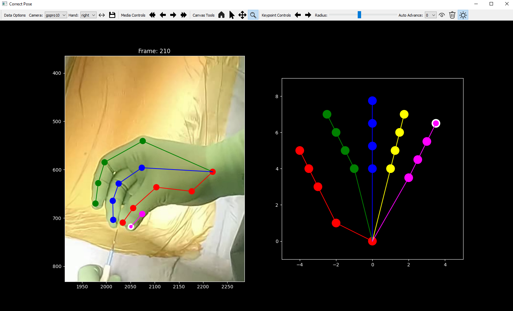

Accurate 3D hand pose estimation supports surgical applications such as skill assessment and robot-assisted interventions. However, surgical environments pose severe challenges, including intense and localized lighting, frequent occlusions by instruments or staff, and uniform hand appearance due to gloves, combined with a scarcity of annotated datasets for reliable model training. We propose a robust multi-view pipeline for 3D hand pose estimation in surgical contexts that requires no domain-specific fine-tuning and relies solely on off-the-shelf pretrained models. The pipeline integrates reliable person detection, whole-body pose estimation, and state-of-the-art 2D hand keypoint prediction on tracked hand crops, followed by a constrained 3D optimization. In addition, we introduce a novel surgical benchmark dataset comprising over 68,000 frames and 3,000 manually annotated 2D hand poses with triangulated 3D ground truth, recorded in a replica operating room under varying levels of scene complexity. Quantitative experiments demonstrate that our method consistently outperforms baselines, achieving a 31% reduction in 2D mean joint error and a 76% reduction in 3D mean per-joint position error. Our work establishes a strong baseline for 3D hand pose estimation in surgery, providing both a training-free pipeline and a comprehensive annotated dataset to facilitate future research in surgical computer vision.
Our method reconstructs accurate 3D hand poses from multi-view images of real surgical scenes and can bring them to life using SMPL in a virtual operating room.
We present a robust multi-view pipeline for 3D hand pose estimation in surgical scenes that operates without any domain-specific training. The method leverages off-the-shelf pretrained models for person detection, whole-body pose estimation, and high-accuracy 2D hand keypoint prediction applied to temporally tracked hand regions. Multi-view 2D keypoints are then fused using a constrained 3D optimization that enforces multi-view consistency, enabling reliable hand pose reconstruction despite occlusions, challenging lighting, and visually uniform surgical gloves.
We introduce a first-of-its-kind multi-view dataset capturing real surgical hand motion in a fully realistic operating-room replica. Recorded with up to 12 synchronized 4K cameras and precise calibration, the dataset delivers over 68,000 multi-view frames of complex surgical interaction; providing an unprecedented foundation for advancing 3D hand pose estimation in surgery.
To reflect the true challenges of the operating room, we designed a structured hierarchy of six complexity levels. These range from clean single-surgeon scenarios with full hand visibility to highly dynamic, multi-person procedures with severe occlusions and, fast tool use. This progression enables researchers to rigorously stress-test algorithms from controlled conditions to real clinical workflows.
We also contribute a custom annotation tool to efficiently generate high-quality ground truth labels. The software provides an intuitive graphical user interface that allows annotators to select the sequence to be labeled and specify the number of people present in the scene.

Labeling interface after annotating and zooming into a selected frame.
@article{fischer2026multiviewpipelinebenchmarkdataset,
title={A Multi-View Pipeline and Benchmark Dataset for 3D Hand Pose Estimation in Surgery},
author={Valery Fischer and Alan Magdaleno and Anna-Katharina Calek and Nicola Cavalcanti and Nathan Hoffman and Christoph Germann and Joschua Wüthrich and Max Krähenmann and Mazda Farshad and Philipp Fürnstahl and Lilian Calvet},
year={2026},
eprint={2601.15918},
archivePrefix={arXiv},
primaryClass={cs.CV},
url={https://arxiv.org/abs/2601.15918},
}